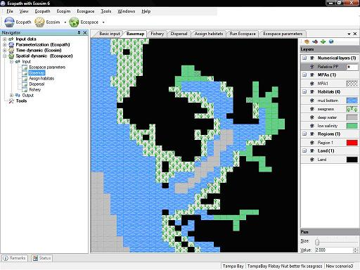
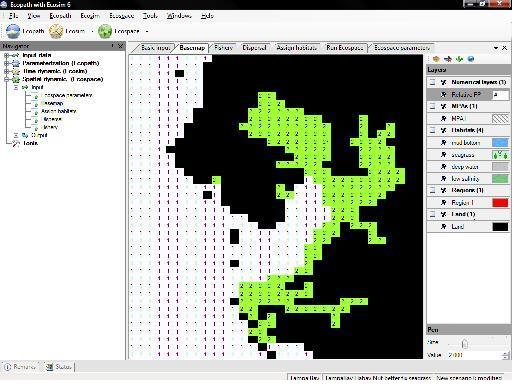

Edit basemap
Edit basemap
Before sketching your basemap you must first set the dimensions of the map using the Edit basemap dialogue box (see below). You must also set the number of habitats and any marine protected areas and regions (see Edit habitats..., Edit MPAs... and Edit regions... below).
The distinction between land and water areas is crucial to the definition of the basemap. This distinction determines the map’s overall appearance (i.e., its resemblance to a geographic map) and, in case of detailed maps, the routes through which organisms move between adjacent cells.
See Considerations for building the basemap below for a short list of issues to consider when building the basemap.
Edit basemapOpens the Edit basemap dialogue box, used for setting the dimensions and location of the Ecospace basemap. See Define Ecospace habitats for help with this dialogue box.
 Edit habitats
Edit habitats‘Habitats’, in Ecospace, are sets of (water) cells sharing certain features affecting the movements, feeding rate, and survival of the Ecopath model components occurring therein. The names and number of habitats are set using the Edit habitats dialogue box, available by clicking on the icon at the top right of the Basemap form. The dialogue box can also be opened from the Ecospace menu. See Define Ecospace habitats for help with this dialogue box.
 Edit MPAs
Edit MPAsUsers can overlay habitats with marine protected areas (MPAs), which are areas closed to fishing for all or part of the year. The names and number of MPAs are set using the Edit MPAs dialogue box, available by clicking on the icon at the top right of the Basemap form. The dialogue box can also be opened from the Ecospace menu. See Define Ecospace habitats for help with this dialogue box.
 Edit regions
Edit regionsUsers can also overlay habitats with statistical ‘regions’ (i.e., groups of cells). Regions represent areas of management interest and may or may not have biological significance. Organisms cannot be assigned to regions, only habitats. The names and number of regions are set using the Edit regions dialogue box, available by clicking on the icon at the top right of the Basemap form. The dialogue box can also be opened from the Ecospace menu. See Define Ecospace habitats for help with this dialogue box.
Using the Basemap form is intuitive. Simply click on the name of the layer you wish to activate and begin sketching with the mouse (holding down the left button). You can change the size of the pen using the Size scale under the Pen heading.
The Basemap form uses the concept of overlaid layers, commonly found in graphics software. One type of habitat/MPA/Region etc is shown on each layer.
Layers are grouped under the headings: Land; Habitats; MPAs; Regions and Numerical layers. Expand each heading by clicking on the plus icon. There will be one land layer. The number of habitat layers will depend on the number of habitats set using the Edit habitats dialogue box (and so on for the number of MPAs and Regions). You can add new habitats etc. while the Basemap form is open.
In addition to defining water cells as habitats, MPAs and regions, users can assign numerical values to each cell. Currently this can only be done for primary production relative to the Ecopath base level. This is shown as Relative PP under the Numerical layers heading.
Edit the appearance of each layer using the Edit layers dialogue box, accessible by clicking on the coloured box next to the layer name. There you can set the colours, patterns and transparency of the cells as well as see summary statistics for the layer (see Edit layers for details).
Show or hide layers by clicking on the eye symbol ( ) next to the layer name.
) next to the layer name.
It is recommended that you begin by sketching the land cells.
The distinction between land and water areas is crucial to the definition of the basemap. This distinction determines the map’s overall appearance (i.e., its resemblance to a geographic map) and, in case of detailed maps, the routes through which organisms move between adjacent cells. Note that movements on the Ecospace map can only resemble those of rooks on chessboards, but not those of bishops (i.e., sideways not diagonal movement). Thus, a system including, e.g., a number of narrow, crooked channels must be simplified.
Though not contributing to the results, the basemap cells defined as ‘land’ consume memory and computing time. Their number should therefore be kept as small as possible, e.g., by orienting the basemap sideways where appropriate.
Every water cell in the basemap needs to be assigned as a habitat.
Typically, the features defining habitats are distance from the coast (inshore, offshore…), or depth (shallow, intermediate, deep…) and/or bottom type (rocky, sandy, muddy…).
Note that definition of habitat in Ecospace usually includes the entire water column, from the surface to the bottom. Thus, while ‘rockfishes’ will tend to be limited to hard bottoms, and burrowing bivalves to soft bottoms, small coastal pelagics, which occur higher up in the water column, may ‘prefer’ hard and soft bottom habitats, as long as both are coastal.Assign habitat preferences of the models's groups using the Assign habitats form.
The basemap may include open borders, i.e., water areas not bounded by land. In such cases, the flow of organisms out of a border cell is compensated for by an equal flow of organisms into the cell, i.e., the system will not ‘leak’.
MPAs are overlaid on top of habitats. MPAs can occupy as many or few cells as desired and can span different habitats.
Note, however that the size and position of individual MPA cells correspond directly with that of individual habitat cells (i.e., an MPA cell cannot be in half of one habitat cell and half of another).
Assign which fleets can and cannot fish in MPAs using Ecospace fishery form.
Regions also overlay habitats. Regions represent areas of management interest and may or may not have biological significance. Organisms cannot be assigned to regions, only habitats.
Primary production may vary in different areas of an ecosystem, e.g., due to terrigenous inflow of nutrients, or processes that lead to mixing or upwelling of water masses.
Mapping such areas is done in one of two ways.
1. Sketching a multiplier of the baseline P/B for primary producers. This multiplier, which may range from 0.01 to 100, can thus be used to depict anything from areas with very low primary production rates to areas with very high rates compared to the underlying Ecopath model.The values entered are relative and the total primary production is scaled so that it will be the same as in the base Ecopath model. Warning: Ecospace is sensitive to this setting. Even if the range is 0.01 to 100 such extremes should be used with great care only.
To sketch in the multipliers, first select the Relative PP layer. Each cell will display 1 (i.e., every cell starts with the same amount of primary production as in the Ecopath base model). Next, set the new value of the multiplier in the Value box at the bottom right of the form. Finally, while holding down the left mouse button, sketch over the cells to be changed to the new value (see Figure 10.6b). Repeat the process as many times as needed.
2. Reading in the data from an external source (e.g., Sea WiFS). This is done using the Edit layers dialogue box, accessible by clicking on the # symbol under Numerical layers on the Layers menu.


10.6a basemap showing habitat layers
10.6b Basemap showing numerical (relative PP) layer